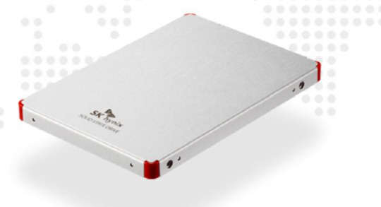
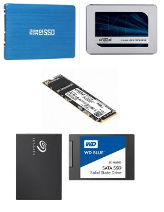

Samsung SSD

삼성은 세계에서 가장큰 반도체 업체로 거듭나며, 엄청난 기술축적과 A/S생태계를 만들었습니다
이러한 엄청나게 큰 업체의 큰 장점은 대한민국기업이라는것이며, 한국에 따로 삼성서비스라는
자기업을 운영하며 엄청난 A/S해택을 부여하고있습니다. 이 SSD의 수명은 너무나 질겨서 일생에 죽는걸 보시기
쉽진 않겠다만 고장나도 너무나긴 보증기간과 보증처로 어려움없이 이 SSD를 사용할수 있습니다.일단 여기서
나오는 SSD중 단언컨데 A/S가 최고일것입니다, 늘그래왔고요.
SK하이닉스 SSD
Sk하이닉스또한 세계에서 2위의 반도체업체입니다,한국기업이기에 여기에 넣었으며, 그다지 중소기업
AS와 차이점은 없습니다. 적당히 추천드려요.
나머지

좋은데도 있을수 있고 않좋은데 있을수도 있습니다 하지만 그래도 일단 아예 서비스가 불가능하단것이 아니란
점에서 다행입니다 하지만 소비자가 불공정하다고 생각되는 행동을 할수도 있습니다.